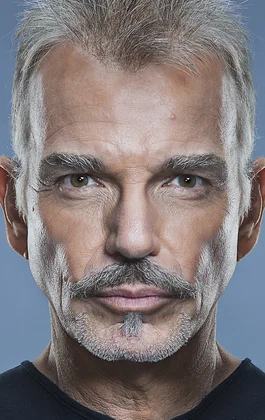

Hunter's Blood (1986)

South of Reno (1988)

Going Overboard (1989)

Chopper Chicks in Zombietown (1989)

Billy Bob Thornton was born on August 4, 1955, in Hot Springs, Arkansas, the son of Virginia Roberta (née Faulkner; died July 29, 2017), a self-proclaimed psychic, and William Raymond "Billy Ray" Thornton (November 1929 – August 1974), a high school history teacher and basketball coach. His brother Jimmy Don (April 1958 – October 1988) wrote a number of songs; Thornton recorded two of them ("Island Avenue" and "Emily") on his solo albums. He is of part Irish descent. He has another brother, John David Thornton.
Thornton's first screen role was in 1988 South of Reno, where he played a small role as a counter man in a restaurant. He also made an appearance as a pawn store clerk in the 1987 Matlock episode "The Photographer". Another one of his early screen roles was as a cast member on the CBS sitcom Hearts Afire and in 1989 he appeared as an angry heckler in Adam Sandler's debut film Going Overboard. His role as the villain in 1992's One False Move, which he also co-wrote, brought him to the attention of critics. He also had small roles in the 1990s films Indecent Proposal, On Deadly Ground, Bound by Honor, and Tombstone. He went on to write, direct, and star in the 1996 independent film Sling Blade. The film, an expansion of the short film Some Folks Call It a Sling Blade, introduced the story of a mentally handicapped man imprisoned for a gruesome and seemingly inexplicable murder.
Hunter's Blood (1986)
South of Reno (1988)
Going Overboard (1989)
Chopper Chicks in Zombietown (1989)